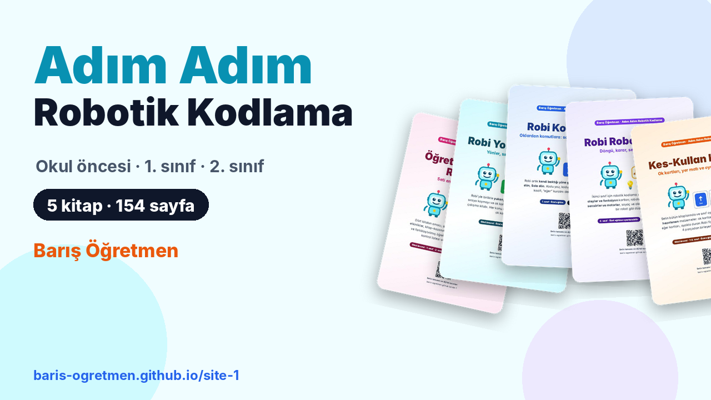
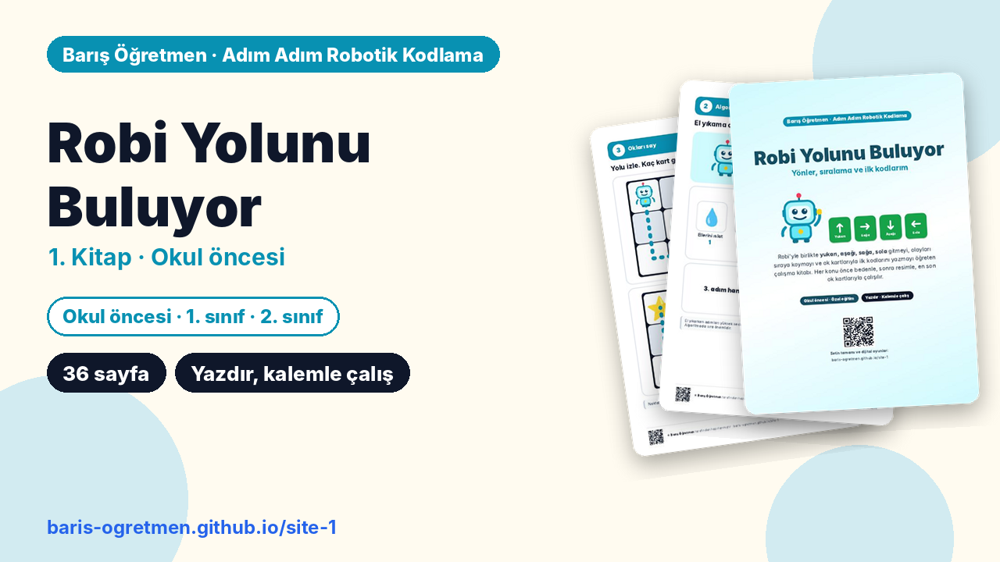
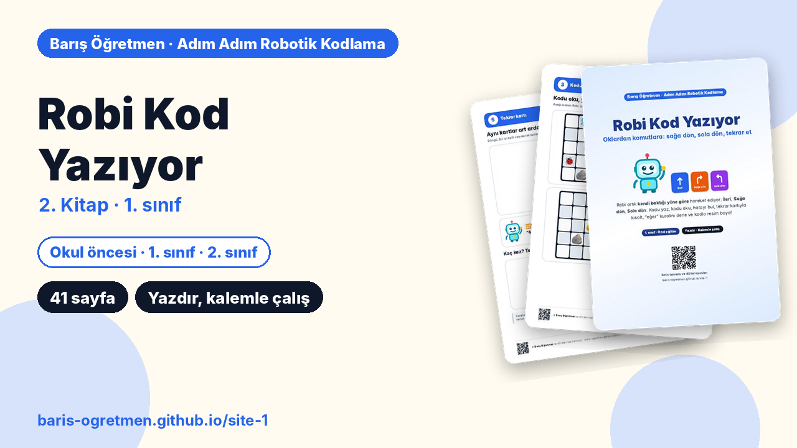
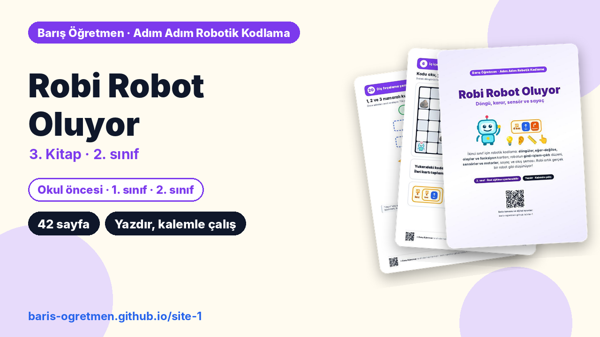
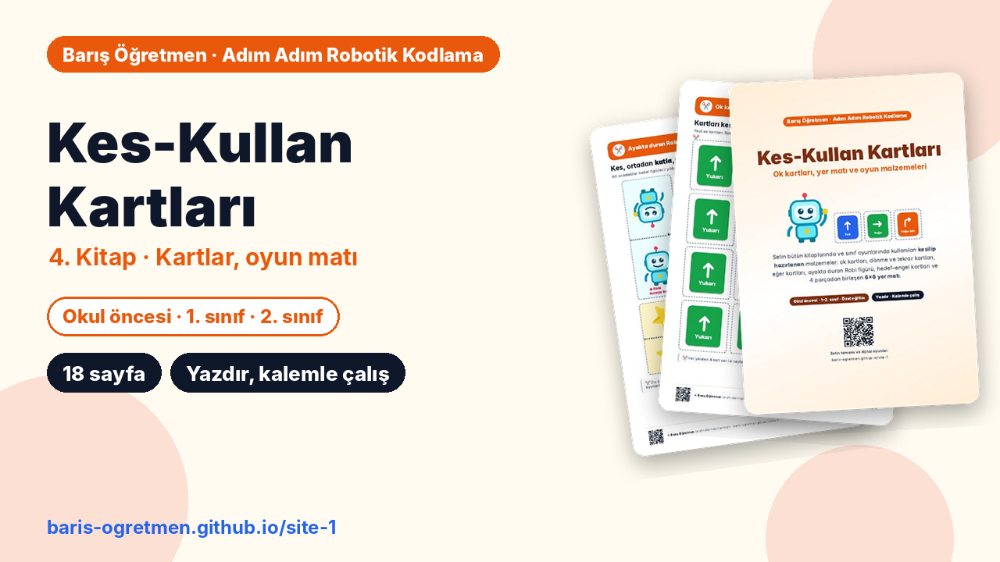
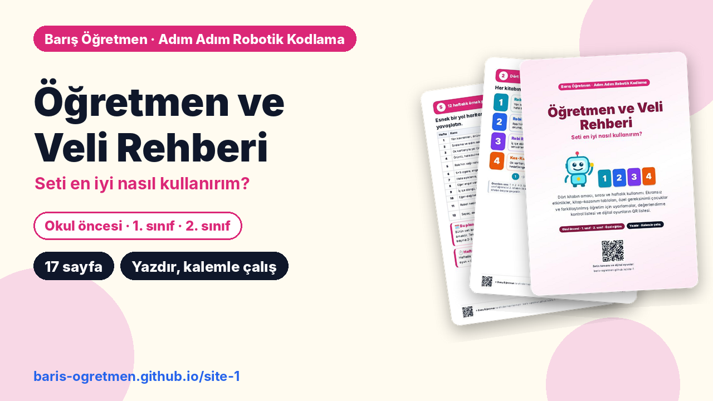

👀 Örnek sayfalar

Örnek sayfaları aç (PDF)
Beş kitaptan seçilmiş 10 sayfa: yönler, ok kartlarıyla yol, Robi’nin sağı-solu, hata ayıklama, akış şeması, kart sayfası.
📄 Örneği aç
1. Kitap · Robi Yolunu Buluyor
Okul öncesi: yönler, sıralama, ok kartlarıyla yol, örüntü, hata bul, eğer–ise, oklarla boyama. Sorular hep iki seçenekli.

2. Kitap · Robi Kod Yazıyor
1. sınıf: İleri / Sağa dön / Sola dön, engelli ızgaralar, kodu yaz, kodu oku, hata ayıklama, tekrar kartı, kodla boyama.

3. Kitap · Robi Robot Oluyor
2. sınıf: iç içe döngü, fonksiyon, eğer–değilse, olaylar, akış şeması, girdi–işlem–çıktı, sensörler, sayaç.

4. Kitap · Kes-Kullan Kartları
Ok ve komut kartları, tekrar ve eğer kartları, ayakta duran Robi, 6×6 yer matı, görev kartları, sınıf oyunları.

Öğretmen ve Veli Rehberi
12 haftalık plan, bir dersin akışı, kazanım tabloları, özel gereksinim ve öğrenme profiline göre uyarlama, kontrol listesi.
🧭 Yöntem
📱 QR ile açılan dijital çalışmalar
Kitaptaki QR’lar bu çalışmalara götürür; yeni çalışmalar eklendikçe aynı QR’lar onları da gösterir.
✉️ Setin tamamı ve okullar için
Sitede setlerin yalnızca örnek sayfaları var. Setin tamamı, okul ve kurum fiyatı için yazın.